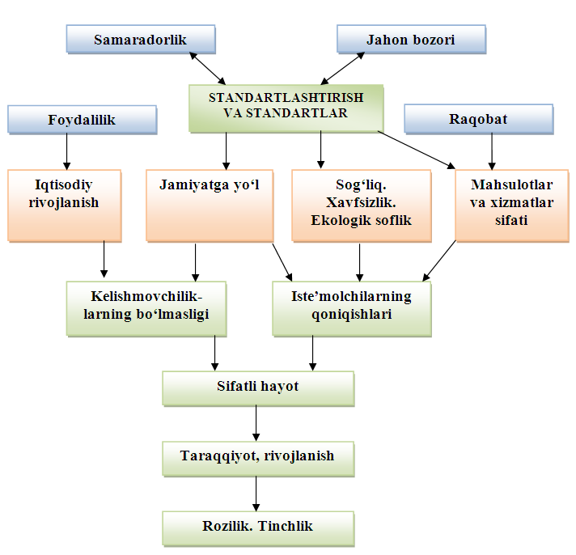
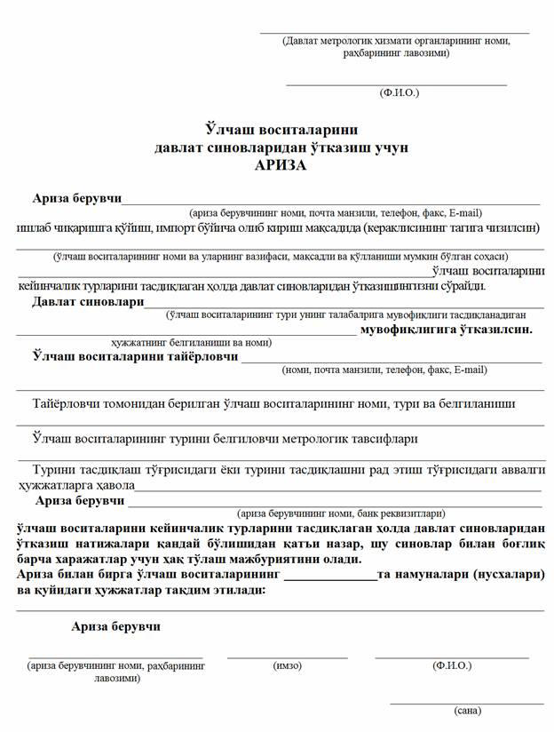
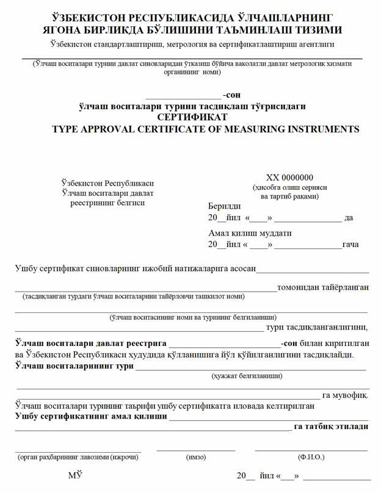

Reja:
9.1. Standartlashtirish sohasidagi asosiy atamalar va tushunchalar.
9.2. Standartlashtirish davlat tizimi.
9.3. Standartlashtirishning asosiy vazifalari.
Standartlashtirish sohasidagi asosiy atamalar va tushunchalar
O‘z DSt 996:2001 standartida “standartlashtirish” tushunchasiga quyidagicha ta’rif berilgan: Standartlashtirish – mavjud yoki bo‘lajak masalalarga nisbatan umumiy ko‘p marta foydalaniladigan qoidalarni belgilash orqali ma’lum sohada eng maqbul darajali tartiblashtirishga yunaltirilgan faoliyat. Standartlarni ishlab chiqish, nashr etish va tatbiq etish ushbu faoliyatning bir ko‘rinishidir. Standart – umum kelishuv (konsensus) asosida ishlab chiqilgan va tan olingan idora tomonidan tasdiqlangan va ma’lum sohada maqbul darajada tartibga solishga yunaltirilgan me’yoriy hujjatdir. Tan olingan idora tomonidan barcha uchun va ko‘p marta foydalanishga mo‘ljallangan, faoliyatning turli yunalishlariga yoki ularning natijalariga tegishli qoidalar, umumiy prinsiplar yoki tavsiflar o‘rnatiladi . Standartlashtirish obyekti - standartlashtirilishi lozim bo‘lgan obyekt (mahsulot, jarayon va xizmatlar). Standartlashtirish obyektlariga mahsulotlar, jarayon yoki xizmatlar, shuningdek har qanday materiallar, komponentlar, uskuna-jihozlar, tizimlar, ularning o‘zaro mos keluvchanligi, protseduralar, bayonnomalar, vazifalar, ularning faoliyat usullari kiradi. Standartlashtirish har qanday obyektning ma’lum jihatlari bilan cheklanishi mumkin. Masalan, poyabzalga nisbatan uning o‘lchamlari va puxtalik mezonlari alohida standartlashtirilishi mumkin.
Ishlab chiqarish sanoati tomonidan ishlab chiqilayotgan turli xildagi buyumlarning va ularning tavsiflarini, usullar va belgilashlarning sonini qisqartirish (reglamentlash) jarayoni turli mamlakatlarda turlicha ko‘rinishda ataladi. Masalan, bu jarayonni AQSH va Angliyada «standardization”, Germaniyada “Normung” va Fransiyada “Normalisation” deb ataladi. Standartlashtirish masalalari bilan shug‘ullanadigan ko‘pgina Yevropa tashkilotlarining nomlarida ham “Normlien” (Shveysariya), “Normalisatie” (Gollandiya) va h.k. so‘zlari ishlatilgan. Yuqorida aytib o‘tilgan barcha xorijiy atamalar ingliz tiliga “standardization“ atamasi bilan, italyan tilida esa “unificazione“ atamasi bilan ifodalanadi. Rossiya mamlakatida esa XX asr boshlarida “normalizatsiya” atamasi qo‘llanilgan va mashinasozlik sanoatida hozirgi paytda ham qo‘llanib kelinmoqda. Standartlashtirishning tarixi haqida. Kishilik jamiyatining «qoidalarni belgilash va qo‘llash»ga bo‘lgan ehtiyoji juda qadim zamonlarda paydo bo‘lgan. Alifbe, yil hisobi, hisob tizimlari, pul va og‘irlik birliklari – bularning hammasi standartlashtirishga qo‘yilgan dastlabki qadamlardir. Tarixshunoslar standartlashtirishga asoslangan muhandislik faoliyatni Qadimgi Misrda ehromlarni barpo etish mobaynida vujudga kelgan deb hisoblaydilar (taxminan 5000 yil avval). Qurilish uchun ishlatilgan toshlar ma’lum bir aniq o‘lchamlarga ega bo‘lgan va ma’lum qonuniyat asosida tartib bilan joylashtirilgan, bu siz ehromlarning to‘g‘ri geometrik shaklini, ya’ni piramida shaklini hosil qilish va ularni asrlar davomida uzoq vaqt saqlanishini ta’minlash mumkin emas edi. Taxminan 50 asrdan ortiq vaqt davomida saqlanib, bizgacha yetib kelgan bu inshoatlar juda yuqori sifat va aniqlik bilan qurilgan. Toshlarga shunday aniqlik bilan ishlov berilganki, natijada bir – birlari bilan yondoshganlarining orasidan ingichka ignani ham o‘tkazib bo‘lmaydi. Shuningdek qadimgi Misrda qurilish ishlarida doimiy “standart” o‘lchamdagi g‘ishtlardan foydalanilgan, bunda nazorat ishlari bilan maxsus amaldorlar shug‘ullanishgan. Standartlashtirishning qo‘llanilishini bundan 4200 yil ilgarigi Misr harbiy texnikasidagi qudratli harbiy qurol sanalgan manjaniq (katapulta) larni loyihalashda va ishlab chiqarishda kuzatish mumkin, bunda nisbiy o‘lchamlar usuli qo‘llanilgan bo‘lib, manjaniq barcha detallarining o‘lchamlari bitta bosh parametrga, ya’ni shu manjaniq otadigan o‘qning uzunligiga mos qilib olingan. Tarixiy manbalarda keltirilishicha qadimgi Vavilonda qurilgan balandligi 90 metrli Vavilon minorasini qurishda (eramizdan taxminan ming yil ilgari) ma’lum bir o‘lchamli 85 mln. dan ortiq pishiq g‘ishtlar ishlatilganligi va ularni terishda bog‘lovchi material (asfalt) qo‘llanilganligi keltirib o‘tilgan. Qadimgi rimliklar shaharlarning suv ta’minoti tizimida standartlashtirishni qo‘llashgan, ya’ni suv quvurlari bir xil o‘lchamli qilib tayyorlangan. Standartlashtirishning tadbiq etilishi Uyg‘onish davrida (XV asrlarda) kemasozlik sanoatida katta kemalar ishlab chiqarilishi oqim (potok) usulda tashkil qilinishiga olib keldi. 1535 yilda Rossiya podshosi Ivan IV tomonidan imzolangan Farmon standartlashtirish sohasida dastlabki hujjatlardan sanaladi. Bu Farmonda to‘p yadrolarining o‘lchamlarini kalibrlar bilan nazorat qilish ko‘zda tutilgan. XIX asr o‘rtasi XX asr boshlarida temir yo‘l transportidan keng foydalanish standartlashtirishning rivojlanishiga turtki bo‘ldi. Bu vaqtlarda temir yo‘l relslari orasidagi masofa, vagonlarning rangi, asosiy qurilmalarning balandliklari, g‘ildiraklar diametrlari, temir yo‘l qurilishida qo‘llaniladigan qurilish materiallari uchun standartlar ishlab chiqildi. 1785 yilda fransuz muhandisi Leblan qurolsozlikda ishlatiladigan maxsus qulflar partiyasini (50 dona) ishlab chiqardi, bu qulflar o‘zaro almashi-nuvchanlik xususiyatiga ega edi. 1870 yillarda bir qator Yevropa mamlakatlarida g‘ishtlarning standart o‘lchamlari o‘rnatildi. Bu milliy va xalqaro standartlashtirish sohasidagi erishilgan ilk natijalardan edi. Qadimgi Markaziy Osiyo xalqlari, jumladan bizning ajdodlarimiz faoliyatida ham standartlashtirish elementlarini ko‘rish mumkin. Jumladan me’morchilik ishlarida standart g‘ishtlardan foydalanish bilan bir qatorda aniq o‘lchamdagi va turli ranglardagi g‘ishtlardan, sirlangan va naqshinkor plitalardan, maxsus bloklardan, bir xil o‘lchamdagi va ko‘rinishdagi ustunlardan, havorang va yashil tusdagi koshinlardan foydalanilgan. Bundan tashqari turli shaharlarni suv bilan ta’minlashda qo‘llanilgan suv quvurlari va boshqalarda ham standartlashtirish elementlarini ko‘rish mumkin.
Davlat standartlashtirish tizimi o‘zida mamlakat miqyosida standart-lashtirish bo‘yicha
amaliy faoliyatlarning asosiy masalalarini belgilab beruvchi o‘zaro bog‘liq bo‘lgan qoidalar va talablar
majmuini ifodalaydi.
O‘zbekiston Respublikasining “Standartlashtirish to‘g‘risida”gi qonunida ko‘rsatilishicha, O‘zbekiston
Respublikasida standartlashtirish bo‘yicha ishlarni olib borish tashkiliy-texnikaviy qoidalarini
belgilovchi standartlashtirish davlat tizimi (O‘z SDT) amalda qo‘llaniladi. O‘zbekiston Respublikasi
standartlashtirish davlat tizimining asosiy tamoyillari Vazirlar Mahkamasining 1992 yil martda qabul
qilingan №93 “O‘zbekiston Respublikasida standartlashtirish bo‘yicha ishlarni tashkillashtirish
to‘g‘risida”gi qarori bilan belgilangan.
O‘zbekiston standartlashtirish davlat tizimi (O‘zSDT) standartlash-tirish tarmoqlararo tizimi (STT) ning
tasnifi bo‘yicha I klassga kiradi. STT alohida guruhlar(sinflar)ga birlashtirilgan, tarmoqlararo
tashkiliy-metodik va umum-texnikaviy asos bo‘luvchi me’yoriy hujjatlar majmuidan iborat. O‘z SDT
standartlashtirishning asosiy vazifasidan kelib chiqqan holda, faoliyatning barcha sohalarida tartibga
tushirishga qaratilgan ilmiy-texnikaviy faoliyat sifatida, standartlashtirish ishlarining o‘zini
tashkillashtirish va o‘tkazish tartibini belgilaydi. Bunda O‘z SDTga quyidagicha ta’rif berilgan
“Bir-biri bilan munosabatda va aloqada bo‘lgan, ma’lum bir butunlikni, harakatda yagonalikni tashkil
etuvchi elementlarning ma’lum tartibi yoki to‘plami”. Demak, O‘z SDT “ma’lum butunlik, yagonalikdan”
iborat bo‘lib, faqat “harakatda”, ya’ni doimiy va muttasil ravishda mukammallanish, rivojlanish,
dolzarblanish sharoitlarida ishlaydi.
O‘zbekiston standartlashtirish davlat tizimi:
- me’yoriy hujjatlarni rejalashtirish, ishlab chiqish, kelishish, davlat ro‘yxatidan o‘tkazish;
- me’yoriy hujjatlarni tekshirish, bekor qilish, qayta ko‘rib chiqish, ularga o‘zgartarishlar
kiritish;
- mahsulot ishlab chiqarishni me’yoriy hujjatlar bilan ta’minlash;
- xizmat ko‘rsatish, tashish, saqlash, xaridga chiqarish, ta’mirlash, ishlatish (iste’mol qilish),
qayta foydalanish;
- me’yoriy hujjatlarning ilmiy-texnikaviy darajasini ekspertizadan o‘tkazish va baholash ishlarini
o‘tkazish usullari;
- xalqaro, davlatlararo, hududiy, xorijiy standartlarni qo‘llanish usullari va h.k. tartibini
o‘rnatadi.
O‘z SDT asos bo‘luvchi me’yoriy hujjatlar majmuidan iborat. Bu hujjatlar tashkiliy-metodik va
umumtexnikaviy standartlarga tasniflanadi.
Tashkiliy-metodik standartlar quyidagilarni belgilaydi:– muayyan sohadagi ishlar bo‘yicha maqsadlarni,
vazifalarni, umumiy tashkiliy-texnikaviy qoidalarni;
– standartlashtirish bo‘yicha ishlarni bajarishga oid asosiy tashkiliy- texnikaviy qoidalarni;
– me’yoriy hujjatlar, texnik hujjatlar (konstruktorlik, texnologik, loyiha-viy, dasturiy hujjatlar) ni
ishlab chiqish, tasdiqlash va joriy etish tartibini;
– mahsulotni ishlab chiqarishga qo‘yish qoidalarini.
Umumtexnikaviy standartlar quyidagilarni belgilaydi:
– xalq xo‘jaligining barcha tarmoqlarida ilmiy-texnikavny atamalar va ularning ta’riflari;
– standartlashtirishning turli obyektlari uchun shartli belgilar (nomlar, kodlar, simvollar va h.k);
– turli hujjatlar (me’yoriy, konstruktorlik, loyihaviy, texnologik, dasturiy va b. hujjatlar) ning
tuzilishi, bayon etilishi, rasmiylashtirilishi va mazmuniga talablar;
– ishlab chiqarishni texnikaviy, shu jumladan metrologik ta’minlash uchun zarur bo‘lgan umumtexnikaviy
kattaliklar, talablar va me’yorlar. Jumladan, bu standartlar o‘lchashlar aniqligining me’yorlarini,
afzal sonlar, elektr tokining nominal chastotalarining qatorlari va kuchlanishlarining afzal qatorlari,
joizliklar va o‘tqazishlar, zararli moddalarning chiqarib yuboriladigan eng katta joiz miqdori va ruxsat
etilgan eng katta kontsentratsiyasi; shovqin, titranish, radiatsion nurlanish, radio shovqinning eng
katta ruxsat etilgan darajasi; texnik estetika va ergonomika talablari va boshqa yagona texnikaviy
talablar va (yoki) normalarni belgilaydi;
– xavfli holatlarning guruhlari bo‘yicha va texnologik jarayonlarning alohida turlari bo‘yicha
xavfsizlikning umumiy talablari;
– atrof-muhitni muhofazalash va tabiiy boyliklardan foydalanishni yaxshilash sohasidagi umumiy talablar
[22]. Asos bo‘luvchi standartlar barcha STT dagi, masalan, “Konstruktorlik hujjatlarining yagona tizimi”
(O‘z KHYaT), “Texnologik hujjatlarning yagona tizimi” (O‘z.THYaT), “Mahsulot sifati ko‘rsatkichlari
tizimi” (O‘zMSKT), “Sertifikatlashtirish milliy tizimi” (O‘z SMT), “Texnik-iqtisodiy, ijtimoiy
axborotlarni tasniflash-kodlash yagona tizimi” (O‘z TIIATKYaT), “O‘lchashlar birliligini ta’minlash
davlat tizimi” (O‘z O‘DT), “Mahsulot yaratish va ishlab chiqarishni tashkil qilish tizimi‘ (O‘z
MYaIChQT), “Akkreditlash tizimi” (O‘z AT), “Mahsulotni sinash tizimi” (O‘z MST), “Sifat tizimi” (O‘z ST)
va boshqalardagi faoliyatlarni tartibga soladi. Xalqaro standartlardan foydalanish maqsadlarida SDTda
Standartlashtirish bo‘yicha xalqaro tashkilot (ISO) va Xalqaro elektrotexnika komissiyasi (IEC)ning
atrof-muhitni boshqarish tizimida, standartlar kataloglarini taqdim etish tartibida va xalqaro va
hududiy standartlarni O‘zbekiston standartlari sifatida qabul qilish tartibida to‘rt xil nomli
standartlar qabul qilingan. “Standartlashtirish to‘g‘risida” O‘zbekiston Respublikasining qonuniga
o‘zgartirish-lar kiritish va standartlashtirishni yanada rivojlantirish va mukammallashtirishga
qaratilgan, O‘zbekiston Respublikasi Hukumatining standartlashtirish masalalari bo‘yicha qator qarorlari
(1994 yil 12 avgustdagi №410-sonli, 1998 yil 5 yanvardagi №5-sonli, 2002 yil 3 oktabrdagi №342-sonli,
2004 yil 5 av-gustdagi №373-sonli qarorlari) qabul qilinganligi munosabati bilan asos bo‘-luvchi
me’yoriy hujjatlarga keyingi yillarda 50 ga yaqin o‘zgartirishlar kiritildi.
O‘z SDT quyidagi muhim asoslarga tayanadi:
- tashkiliy asoslar;
- huquqiy asoslar;
- tasniflash;
- atamalar va ta’riflar;
- asosiy qoidalar;
- nazariy asoslar
shakllari haqidagi fandir. Shuningdek u iqtisod, texnologiya va fundamental fanlar
singari asosiy yо‘nalishlarni bir-biriga bog‘lovchi vosita hamdir.Kо‘pgina texnika sohasida ilg‘or
sanalgan mamlakatlarda standartlashtirish masalalariga va uning nazariy asoslariga qiziqishning yanada
o‘sishi kuzatilmoqda.
Standartlashtirishni joriy qilish texnika taraqqiyotida ham, ishlab chiqa-rishda ham eng ratsional,
mahsulot sifatini yaxshilash, mehnat xarajatlarini va moddiy resurslarni tejashning asoslaridan biri
sifatida kо‘rilmoqda.
1993 yil 28 dekabrda qabul qilingan “Standartlashtirish to‘g‘risi”gi qonunda standartlashtirishning
asosiy maqsadlari ko‘rsatib berilgan. Bularga quyidagilar kiradi:
- mahsulotlar, jarayonlar, ishlar va xizmatlarning (bundan buyon matnda "mahsulot" deb yuritiladi)
aholining hayoti, sog‘lig‘i va mol-mulkiga, atrof-muhit uchun xavfsizligi, resurslarni tejash
masalalarida iste’molchilar va davlat manfaatlarini himoya qilishdan;
- mahsulotlarning o‘zaro almashinuvchanligini va bir-biriga mos kelishini ta’minlashdan;- fan va texnika
taraqqiyoti darajasiga, shuningdek aholining hamda xalq xo‘jaligining ehtiyojlariga muvofiq holda
mahsulot sifatini hamda raqobat qila olish imkonini oshirishdan;
barcha turdagi resurslar tejalishiga ko‘maklashishdan, ishlab chiqarishning texnik-iqtisodiy
ko‘rsatkichlarini yaxshilashdan;
- ijtimoiy-iqtisodiy, ilmiy-texnikaviy dasturlar va loyihalarni amalga oshirishdan;
- tabiiy va texnogen falokatlar hamda boshqa favqulodda vaziyatlar yuzaga kelish xavf-xatarini hisobga
olgan holda xalq xo‘jaligi obyektlarining xavfsizligini ta’minlashdan;
- iste’molchilarni ishlab chiqarilayotgan mahsulot nomenklaturasi hamda sifati to‘g‘risida to‘liq va
ishonchli axborot bilan ta’minlashdan;
- mudofaa qobiliyatini va safarbarlik tayyorligini ta’minlashdan;
- o‘lchovlarning yagona birlikda bo‘lishini ta’minlashdan iboratdir.
Standartlashtirish prinsiplari. Prinsip (tamoyil) so‘zi (lotincha “principium” so‘zidan olingan bo‘lib,
“boshlanish” degan ma’noni bildiradi) – qandaydir ilmiy tizim, nazariya, siyosat, qurilmani va
boshqalarning nimadandir qurilganligining asosiy boshlanishidir.
Standartlashtirishning asosiy prinsiplariga quyidagilar kiradi:
- me’yoriy hujjatlarni ijtimoiy, iqtisodiy, texnikaviy zarurati va maqbulligini inobatga olgan holda
ularni ishlab chiqish maqsadga muvofiqligi;
- obyektlarga qo‘yiladigan talablarni kelishib olish va me’yoriy hujjatlarni amalga joriy etish
muddatlarini muvofiqlashtirish yo‘li bilan metrologik ta’minlashni qo‘shib hisoblab o‘zaro bog‘langan
obyektlarni standartlashtirishning kompleksligi;
- me’yoriy hujjatlarning fan va texnikani hozirgi zamon yutuqlariga, ilg‘or tajribaga, qonun
hujjatlariga muvofiqligini ta’minlash;
- standartlashtirishning hamma bosqichlarida me’yoriy hujjatlarni o‘zaro bog‘liqligini va
kelishilganligi, boshqarishning barcha pog‘onalarida ularni o‘xshash obyektlari uchun qaytadan ishlab
chiqilmasligi;
- amaldagi me’yoriy hujjatlar, standartlashtirish bo‘yicha dasturlar va ish rejalari tog‘risidagi
axborotlarni oshkoraliligi;
- ko‘pchilik daxldor tomonlarning kelishuviga erishish asosida me’yoriy hujjatlarni tasdiqlash;
- me’yoriy hujjatlarning sertifikatlashtirish maqsadlari uchun yaroqliligi;
- standartlashtirish sohasida zamonaviy axborot tizimlari va texnologiyalarni qo‘llash va hakozo.
Fan sifatida standartlashtirish prinsiplarini ikki guruhga ajratish mumkin:
1. Bosh (boshqaruvchi) prinsiplar;2. Ergashgan prinsiplar.
Quyidagilar standartlashtirishning bosh prinsiplari hisoblanadi:
-muntazamlik (reja asosida bo‘lish) prinsipi;
- tizimlilik prinsipi;
- to‘lalilik (komplektlilik) prinsipi.
Muntazamlik (reja asosida bo‘lish) prinsipi tizimda standartlashtirish obyektlari va uning elementlarini
ishlab chiqish bo‘yicha faoliyatlarni uzluksiz rejalashtirish va bashoratlashni aks ettiradi. Bu
prinsipda mahalliy va xorijiy tashkilotlarda standartlashtirish bo‘yicha istiqbolli ishlarni bajarish va
umumiy ishlab chiqarish samaradorligi, ishlab chiqarilayotgan mahsulotning sifatini oshirish kabi
belgilangan natijalarga erishishga mo‘ljallangan ishlarni amalga oshirish yo‘llari ko‘rib chiqiladi.
Tizimlilik prinsipi standartlashtirish barcha ko‘plab obyektlarni yaxlit tizim sifatida uning
elementlarining o‘zaro munosabati va barchasi bilan aloqadorligi sifatida ko‘rib chiqishni aks ettiradi.
Tizimga kiruvchi o‘zaro aloqador elementlar majmuasi ularni turli xil darajada ierarxik bog‘liqlikda
tuzilmani shakllantirib qurishga yordam beradi. Masalan, korxonani davlat darajasida, tarmoq darajasida
va h.k. tuzilmasini qurish. Bu asosida standartlashtirishning asosiy obyektiga, va unga ta’sir qiluvchi
moddiy hamda nomoddiy elementlari (omillari)ga o‘zaro aloqador talablar tizimi o‘rnatiladi. Talablar
tizimidan asosiy obyekt yaratishda, uni ishlab chiqarish va ekspluatatsiya qilishda foydalaniladi.
To‘lalilik (komplektlilik) prinsipi standartlashtirish obyektlarini aniqlashda va galma-gal qamrab
olishda, barcha asosiy xossalarini aniqlash, ularga optimal talablarni navbatma-navbat o‘rnatish bilan
aloqa va munosabatlarini aks ettiradi. Faqat o‘zaro aloqador ko‘rsatkichlar tizimi belgilangan
talablarga javob beruvchi, xossaning barqarorligini ta’minlash uchun yetarlicha ishonchli asos bo‘lib
xizmat qilishi mumkin.
Standartlashtirishning ergashgan prinsiplari:
-istiqbollilik prinsipi;
-maqbullik (optimallik) prinsipi;
-ixtiyoriy tan olish prinsipi;
-moslashuvchanlik (tez o‘zgaruvchanlik) prinsipi;
-jo‘shqinlik prinsipi.
Istiqbollilik prinsipi erishilgan talablar darajasiga munosabat bo‘yicha oshirilgan talablarni ishlab
chiqishni va ularning kelgusida optimal bo‘lishini, standartlashtirish bo‘yicha ilgarilanma ilmiy
hujjatlarni ishlab chiqishni ta’minlaydi.
Maqbullik (optimallik) prinsipi standartlashtirish obyektiga amaliyotda ko‘p marotaba takror ishlab
chiqarish boshlangunigacha optimal talablarni aniqlash va o‘rnatishga ketma-ket yondashishni aks
ettiradi. Bu yerda ko‘proq standartlashtirish jarayonining ijodiy qismi aks etgan. Eng yuqori
natijaviylikka ratsional, iqtisodiy, optimal variant tanlangandagina erishish mumkin.
Istiqbollilik va maqbullik prinsiplari o‘zaro chambarchas bog‘liq va bir-birini to‘ldiruvchi prinsiplar
hisoblanadi.
Ixtiyoriy tan olish prinsipi savdo va ishlab chiqarishdagi chegara-lashlardan qochish maqsadida
standartlashtirish bo‘yicha hujjatlarni ixtiyoriy qo‘l-lashni aks ettiradigan prinsip bo‘lib, u ayniqsa
davlat ishtirokisiz mahsulotni ishlab chiqarish va sotishni ta’minlovchi xususiy korxona va boshqa
tashkilotlar mahsulotlarining standartlariga tegishlidir.
Moslashuvchanlik (tez o‘zgaruvchanlik) prinsipi ilmiy-texnik rivojlanish hisobiga fan, texnika va
texnologiyaning izchillik bilan rivojlanishida, ishlab chiqarish muhitining doimiy o‘zgarishida
obyektlardan ko‘p marotabali, uzoq muddatli, maqsadli foydalanishni aks ettirdi.
Jo‘shqinlik prinsipi standartlashtirish obyektlarini ilmiy-texnikaviy taraqqiyot talablariga
muvofiqligini tartiblashtirish maqsadida ularga qo‘yilgan talablarni davriy ravishda qayta ko‘rib
chiqishni aks ettiradi.
Standartning eskirishi – uning ijtimoiy foydasi va iqtisodiy samarasini davomiyligini chegaralovchi
asosiy omildir.
Shuningdek standartlashtirishning asosiy prinsiplariga quyidagilar ham kiradi:
– me’yoriy hujjatlarni ijtimoiy, iqtisodiy, texnikaviy zarurati va maqbulligini inobatga olgan holda
ularni ishlab chiqish maqsadga muvofiqligi;
– obyektlarga qo‘yiladigan talablarni kelishib olish va me’yoriy hujjatlarni amalga joriy etish
muddatlarini muvofiqlashtirish yo‘li bilan metrologik ta’minlashni qo‘shib hisoblab o‘zaro bog‘langan
obyektlarni standartlashtirishning kompleksligi;
– me’yoriy hujjatlarni fan va texnikani hozirgi zamon yutuqlariga, ilg‘or tajribaga, qonun
hujjatlariga muvofiqligini ta’minlash;
– standartlashtirishning hamma bosqichlarida me’yoriy hujjatlarni o‘zaro bog‘liqligini va
kelishilganligi, boshqarishning barcha pog‘onalarida ularni o‘xshash obyektlari uchun qaytadan ishlab
chiqilmasligi;
– amaldagi me’yoriy hujjatlar, standartlashtirish bo‘yicha dasturlar va ish rejalari to‘g‘risidagi
axborotlarni oshkoraliligi;
– ko‘pchilik daxldor tomonlarning kelishuviga erishish asosida me’yoriy hujjatlarni tasdiqlash;
– me’yoriy hujjatlarning sertifikatlashtirish maqsadlari uchun yaroqliligi;
– standartlashtirish sohasida zamonaviy axborot tizimlari va texnologiyalarni qo‘llash va hakozo.
Standartlashtirishning jamiyat hayotidagi ahamiyati va iqtisodiyotga ta’siri quyidagi rasmda
tasvirlangan sxemada ifodalab berilgan.

Oʻlchash vositalarini davlat sinovlaridan oʻtkazish OʻzR Vazirlar Mahkamasining 2020-yil 29-avgustdagi 528-son qaroriga asosan qabul qilingan “O‘lchash vositalarini davlat sinovlaridan o‘tkazish qoidalari”asosida amalga oshiriladi. Ushbu Qoidalar talablari davlat metrologik tekshiruvi va nazorati tatbiq etiladigan sohada o‘lchash vositalarini qo‘llaydigan barcha jismoniy va yuridik shaxslar uchun majburiy hisoblanadi. Quyidagi sohalarda qo‘llaniladigan o‘lchash vositalari keyinchalik ularning turi tasdiqlagan holda davlat sinovlaridan o‘tkazilishi kerak: sog‘liqni saqlash, veterinariya, atrof muhitni muhofaza qilish; moddiy boyliklarni va yoqilg‘i-energetika resurslarini hisobga olish; soliq, bojxona, savdo-tijorat, pochta va telekommunikatsiya; zaharli, tez alangalanuvchi, portlovchi va radioaktiv moddalarni saqlash, tashish hamda yo‘q qilish; umumiy ovqatlanish mahsulotlarini ishlab chiqarish, realizatsiya qilish va xizmatlar ko‘rsatish; aholi va hududlarni tabiiy hamda texnogen tusdagi favqulodda vaziyatlardan himoya qilish, yong‘in xavfsizligini, suv obyektlarida insonlarning xavfsizligini ta’minlash;sanoat xavfsizligini ta’minlash; davlat mudofaasini ta’minlash; mehnat xavfsizligini va transport harakati xavfsizligini ta’minlash; sertifikatlashtiriladigan mahsulotning xavfsizligi va sifatini aniqlash; geodezik, kartografik va gidrometeorologik ishlarni bajarish; o‘lchash vositalarini davlat sinovidan, qiyoslashdan, kalibrlashdan, ta’mirlash va metrologik attestatsiyadan o‘tkazish; foydali qazilmalarni qazib olish; rasmiy sport musobaqalarini o‘tkazish; mahsulot va xizmatlar muvofiqligini baholash bo‘yicha ishlarni bajarish. Ariza beruvchi ushbu Qoidalarga 1-ilovaga muvofiq shakl bo‘yicha o‘lchash vositalarini davlat sinovlaridan o‘tkazish uchun ijrochiga ariza yuboradi. O‘lchash vositalarini davlat sinovlaridan o‘tkazish uchun berilgan arizada quyidagi ma’lumotlar bo‘lishi kerak: ariza beruvchining nomi, manzili va rekvizitlari; o‘lchash vositalarini ishlab chiqaruvchining nomi va manzili; o‘lchash vositalarining nomi va ularning vazifasi; o‘lchash vositalarining metrologik va texnik tavsiflari; o‘lchash vositasining turini tasdiqlash bo‘yicha talablar ko‘rsatilgan hujjat belgilanishi va nomi. Arizaga quyidagilar ilova qilinadi: tasdiqlanadigan turdagi o‘lchash vositalari (kamida uch nusxada); o‘lchash vositalarining ekspluatatsiya va texnik hujjatlari; O‘zbekiston Respublikasida seriyalab ishlab chiqarilishi mo‘ljallangan o‘lchash vositalariga talablar belgilangan texnik jihatdan tartibga solish sohasidagi normativ hujjat yoki normativ hujjat loyihasi. Arizaga ilova qilinadigan hujjatlar davlat tilida yoki rus tilida bayon etilishi kerak. Agar hujjatlar boshqa tillarda bayon etilgan bo‘lsa, u holda ularga asl nusxasiga mos tarjimasi ilova qilinadi, uning ishonchliligi uchun ariza beruvchi javob beradi. Ariza va unga ilova qilinadigan hujjatlar bevosita, elektron shaklda yoki pochta aloqasi orqali taqdim etilishi mumkin. Ariza beruvchi o‘z ixtiyoriga ko‘ra qo‘shimcha ravishda boshqa hujjatlarni ham taqdim etishi mumkin. Ijrochi bir ish kuni mobaynida arizani ko‘rib chiqadi va o‘lchash vositalarini davlat sinovlaridan o‘tkazishga ariza beruvchi bilan shartnoma tuzadi, davlat sinovlaridan o‘tkazish imkoniyati bo‘lmagan taqdirda esa — ariza beruvchiga davlat sinovlarini o‘tkazishni rad etish sabablarini ko‘rsatgan holda xat yuboradi.Ijrochi besh ish kunidan oshmaydigan muddatda taqdim etilgan hujjatlarni arizaga asosan ijrochi va ariza beruvchi o‘rtasida tuzilgan shartnoma asosida metrologik ekspertizadan o‘tkazadi hamda ekspertiza natijalariga asosan ekspert xulosasini rasmiylashtiradi. Taqdim etilgan hujjatlarning ekspertizasi metrologik talablar, o‘lchashlar birligi bilan bog‘liq qoidalar va normalar qo‘llanishining to‘g‘riligi va to‘liqligini aniqlash maqsadida amalga oshiriladi. Ekspertiza o‘tkazish vaqtida aniqlangan nomuvofiqliklarni bartaraf etish muddati, ijrochi tomonidan ariza beruvchiga ekspert xulosasi taqdim etilgandan so‘ng o‘ttiz ish kunidan ortiq bo‘lmasligi kerak. Ariza beruvchi tomonidan nomuvofiqliklar bartaraf etilgandan keyin, hujjatlarni qayta ekspertiza qilish zarur hujjatlar olingan kundan boshlab uch ish kunidan oshmaydigan muddatda amalga oshiriladi. Hujjatlarni qayta ekspertiza qilish uchun to‘lov undirilmaydi. Nomuvofiqliklarni bartaraf etish bo‘yicha belgilangan muddatdan keyin topshirilgan hujjatlar yangidan topshirilgan hisoblanadi. Ekspertiza natijalari ijobiy bo‘lganda ijrochi besh ish kunidan oshmaydigan muddatda o‘lchash vositalarini sinash dasturini va qiyoslash uslubiyotini ishlab chiqadi va uni ariza beruvchi bilan kelishadi, o‘lchash vositalarining turini sinovdan o‘tkazish joyini va ariza beruvchi bilan kelishgan holda sinovlar o‘tkazish jadvalini belgilaydi. O‘lchash vositalarini sinash dasturi va qiyoslash uslubiyoti, o‘lchash vositalari texnik jihatdan tartibga solish sohasidagi normativ hujjatlarda belgilangan talablar inobatga olingan holda ishlab chiqiladi. Seriyali ishlab chiqarish, shu jumladan, import bo‘yicha olib kirish uchun mo‘ljallangan o‘lchash vositalarining davlat sinovlari ishlab chiqaruvchi zavodning ishlab chiqarish joyida o‘tkaziladi. O‘lchash vositalarini ishlab chiqaruvchining ishlab chiqarish joyida davlat sinovidan o‘tkazish hajmi va davomiyligi ariza beruvchi bilan kelishgan holda o‘lchash vositalarini sinash dasturiga muvofiq belgilanadi va tuziladigan shartnomada qayd etiladi. O‘lchash vositalarini davlat sinovlaridan o‘tkazish davomiyligi yigirma besh ish kunidan oshmasligi kerak, sinovlar o‘tkazish vaqtining normasi texnik jihatdan tartibga solish sohasidagi normativ hujjatlarda belgilangan talablarga muvofiq ko‘rsatilgan muddatdan oshadigan o‘lchash vositalari bundan mustasno. O‘lchash vositalarini davlat sinovlaridan o‘tkazish jarayonida o‘lchash vositalarining namunalari (nusxalari)ni sinash dasturiga muvofiq eksperimental tadqiq qilinadi va ularning natijalariga ishlov beriladi va tasdiqlanayotgan turdagi o‘lchash vositasining qiyoslash uslubiyotlari eksperimental tarzda sinab ko‘riladi.  